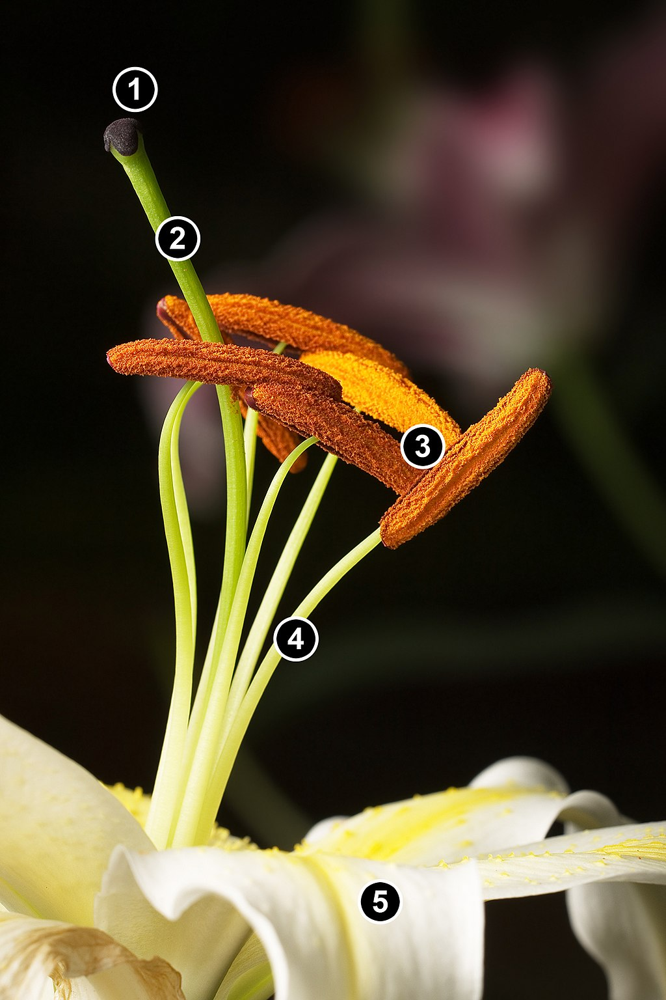

Lilium (/ˈlɪliəm/ LIL-ee-əm)[3] is a genus of herbaceous flowering plants growing from bulbs, all with large prominent flowers. They are the true lilies. Lilies are a group of flowering plants which are important in culture and literature in much of the world. Most species are native to the Northern Hemisphere and their range is temperate climates and extends into the subtropics. Many other plants have "lily" in their common names, but do not belong to the same genus and are therefore not true lilies.

Lilies are tall perennials ranging in height from 2–6 ft (60–180 cm). They form naked or tunicless scaly underground bulbs which are their organs of perennation. In some North American species the base of the bulb develops into rhizomes, on which numerous small bulbs are found. Some species develop stolons.[4] Most bulbs are buried deep in the ground, but a few species form bulbs near the soil surface. Many species form stem-roots. With these, the bulb grows naturally at some depth in the soil, and each year the new stem puts out adventitious roots above the bulb as it emerges from the soil. These roots are in addition to the basal roots that develop at the base of the bulb, a number of species also produce contractile roots that move the bulbs deeper into the soil.
The flowers are large, often fragrant, and come in a wide range of colors including whites, yellows, oranges, pinks, reds and purples. Markings include spots and brush strokes. The plants are late spring- or summer-flowering. Flowers are borne in racemes or umbels at the tip of the stem, with six tepals spreading or reflexed, to give flowers varying from funnel shape to a "Turk's cap". The tepals are free from each other, and bear a nectary at the base of each flower. The ovary is 'superior', borne above the point of attachment of the anthers. The fruit is a three-celled capsule.[6]
Taxonomical division in sections follows the classical division of Comber,[8] species acceptance follows the World Checklist of Selected Plant Families,[9] the taxonomy of section Pseudolirium is from the Flora of North America,[10] the taxonomy of Section Liriotypus is given in consideration of Resetnik et al. 2007,[11] the taxonomy of Chinese species (various sections) follows the Flora of China[12] and the taxonomy of Section Sinomartagon follows Nishikawa et al.[13] as does the taxonomy of Section Archelirion.[14]
The World Checklist of Selected Plant Families, as of January 2014, considers Nomocharis a separate genus in its own right,[15] however some authorities consider Nomocharis to be embedded within Lilium, rather than treat it as a separate genus.[16][17] The Sinomartagon are divided in 3 paraphyletic groups, while the Leucolirion are divided in 2 paraphyletic groups.[18]
There are seven sections:
The botanic name Lilium is the Latin form and is a Linnaean name. The Latin name is derived from the Greek word λείριον leírion, generally assumed to refer to true, white lilies as exemplified by the Madonna lily.[23][24][25] The word was borrowed from Coptic (dial. Fayyumic) hleri, from standard hreri, from Demotic hrry, from Egyptian hrṛt "flower".[citation needed] Meillet maintains that both the Egyptian and the Greek word are possible loans from an extinct, substratum language of the Eastern Mediterranean.[citation needed] Ancient Greek: κρῖνον, krīnon, was used by the Greeks, albeit for lilies of any color.[26]
The term "lily" has in the past been applied to numerous flowering plants, often with only superficial resemblance to the true lily, including water lily, fire lily, lily of the Nile, calla lily, trout lily, kaffir lily, cobra lily, lily of the valley, daylily, ginger lily, Amazon lily, leek lily, Peruvian lily, and others. All English translations of the Bible render the Hebrew shūshan, shōshan, shōshannā as "lily", but the "lily among the thorns" of Song of Solomon, for instance, may be the honeysuckle.[27]